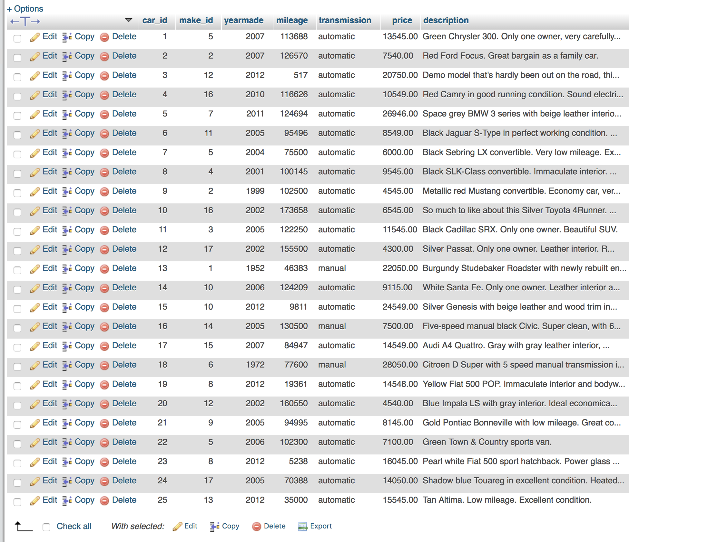
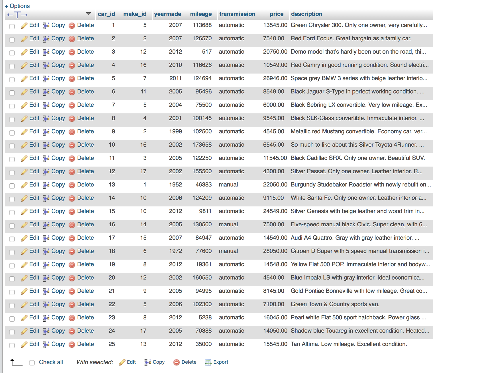

Up and Running with phpMyAdmin
- First chapter was all about exploring what phpMyAdmin is. Also we took a tour of how to operate it and navigate through it.
- Chapter 2 was about some simple tasks such as creating a databass and looking at the users who are able to use phpMyAdmin.
- Chapter 3, explaining how to create a table and insert all the datatypes. Also, we learned how to copy columns into other tables using central columns.
- Chapter 4, Importing & Exporting:
 

- Chapter 5 was about setting up Foreign Key. After set up, we went through the "in's and out's" about FK's.
- Chapter 6. We looked at simple searches and then how to preform a search with QBE (query by example). Find and replace is very simple and similar to the replace in a text editor. Also this chapter we went through everything about the Query tab at the database level. Bookmarks are for query used alot.
- Chapter 7. We looked at creating a view which helped you look at certain stats and use some different queries.A Trigger is used for managing data changes and updates. You can schedule queries to be ran at certain times of the day.
- Cahpter 8 shows off how to look at profiling, which shows how the table is loading. Analyzing the table is sort of like recommendation from phpMyadmin on the datatype you should use. Normalization is similar to database normalization, yet this helps you along the way. You may also check out server preformance and stats from your queries